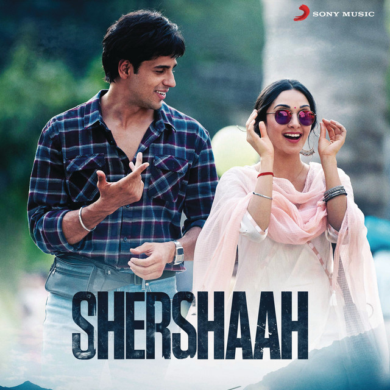

My top 5 movies of all time are
Bollywood
Shershaah
Sidhart manhotra

Shershaah (transl. Lion-king) is a 2021 Indian Hindi-language biographical war film based on the life of
Vikram
Batra, killed in action in the Kargil War, directed by Vishnuvardhan in his Hindi film debut and written by
Sandeep Shrivastava. The film was produced by Dharma Productions and Kaash Entertainment, with Hiroo Yash
Johar,
Karan Johar, Apoorva Mehta, Shabbir Boxwala, Ajay Shah and Himanshu Gandhi serving as producers. Sidharth
Malhotra stars in a dual role as Vikram Batra and his twin brother Vishal, with Kiara Advani as his
girlfriend
Dimple Cheema.[2]
Read more
Mohabbatein
Sharukh khan

Mohabbatein (transl. Romantic Love) is a 2000 Indian Hindi-language musical romantic drama film written and
directed by Aditya Chopra and produced by Yash Chopra under his banner Yash Raj Films. The film stars
Amitabh
Bachchan, Shah Rukh Khan and Aishwarya Rai, and newcomers Uday Chopra, Shamita Shetty, Jugal Hansraj, Kim
Sharma, Jimmy Sheirgill, and Preeti Jhangiani. It narrates the story of Narayan, the strict principal of
Gurukul
college whose daughter Megha, commits suicide after he opposes her relationship with Raj, a music teacher at
the
college. The story follows Raj aiding with three Gurukul students and their love interests to rebel against
Narayan's intolerance of love.
Read more
Three Idiot
Aamir khan

3 Idiots is a 2009 Indian Hindi-language coming-of-age comedy-drama film written, edited and directed by
Rajkumar Hirani, co-written by Abhijat Joshi and produced by Vidhu Vinod Chopra. Adapted loosely from Chetan
Bhagat's novel Five Point Someone,[5] the film stars Aamir Khan, R. Madhavan and Sharman Joshi in the
titular
roles, marking their reunion three years after Rang De Basanti (2006), while Kareena Kapoor, Boman Irani and
Omi
Vaidya appear in pivotal roles. Narrated through two parallel dramas, one in the present and the other set
ten
years in the past, the story follows the friendship of three students at an Indian engineering college and
is a
satire about the social pressures under the Indian education system.[6][7][8]
Read more
Student of the year 2
Tiger shroff

Student of the Year 2 is a 2019 Indian Hindi-language romantic comedy film directed by Punit Malhotra and
produced by Nokia Studios and Karan Johar's Dharma Productions. A standalone sequel to the 2012 film Student
of
the Year, it stars Tiger Shroff, Tara Sutaria, Ananya Panday, and Aditya Seal. It marks the debuts of both
Panday and Sutaria in Hindi cinema.
Read more
Secret suprestar
Zaira Wasim

Secret Superstar is a 2017 Indian Hindi-language musical drama film written and directed by Advait Chandan,
and produced by Aamir Khan and Kiran Rao under the studio Aamir Khan Productions.[4][5][6] The film stars
Zaira Wasim, Aamir Khan, Meher Vij and Raj Arjun.[7] The film tells the coming-of-age story of a teenage
girl who aspires to be a singer, uploading videos on YouTube while disguising her identity with a niqab, and
her relationships with her mother, father and mentor.[8] The film deals with social issues including
feminism, gender equality and domestic violence.[9] The film received overall positive reviews from
critics.[10
Read more
- Shershaah
- Mohabbatein
- Three idiot
- Studentof the year 2
- Secret superstar